| 日付 | 2008年12月23日（火） |
|---|---|
| 山域 | 三浦半島 |
| メンバー | グループ（男2女2） |
| 山行形態 | 日帰り |
| アクセス | 電車 |
| ルート (Map) | 神武寺駅→神武寺→鷹取山→追浜駅 |
休日の予定が空いていたので、急遽人を誘って鷹取山に行くことにする。
三浦半島の付け根にある小さな丘陵。
10:05 神武寺駅到着。標高10m。
最初は車道を歩いていく。マイナーな山だと登山道入口に到着するまでの標識が少なくて困る。
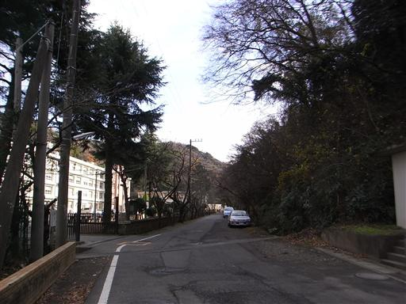
登山道は意外にも自然が沢山残されている。
人はほとんど歩いておらず、低山とは思えない雰囲気だ。
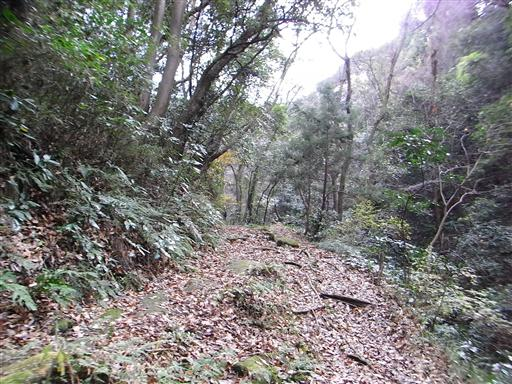
神武寺の近くに来るともみじが植えられていて、きれいに紅葉している。
かなり南のほうで標高も低いので、この時期でも紅葉が見られるのだろう。
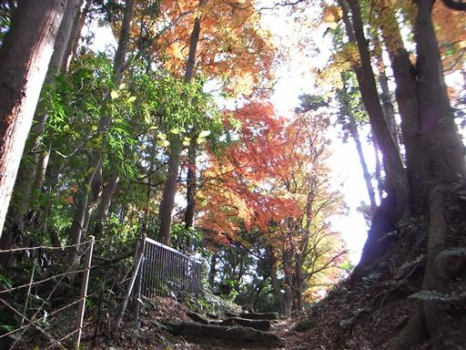
神武寺に到着。ここもほとんど人がおらず非常に静か。
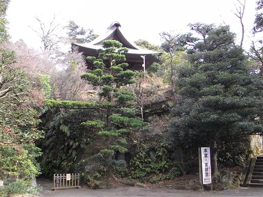
神武寺客殿が見える。客殿は立ち入り禁止だ。
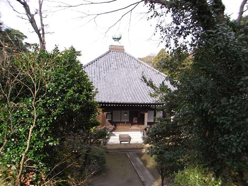
壁の脇には六地蔵が並んでいる。
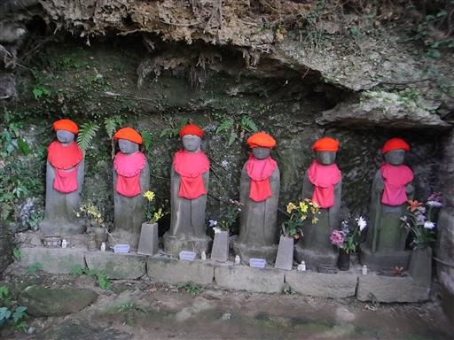
門をくぐって鷹取山方面をめざす。
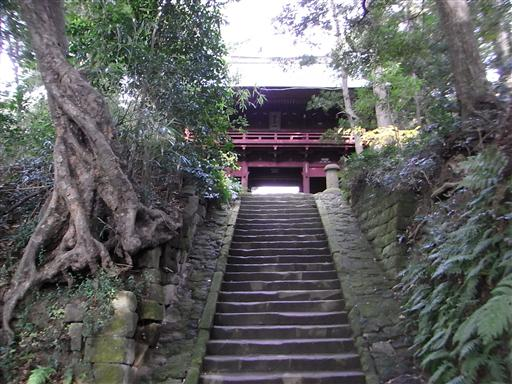
気持ちのよい尾根道を歩いていく。
やたら人が多かった鎌倉アルプスに比べると、こちらの方が歩いていて気持ちがいい。
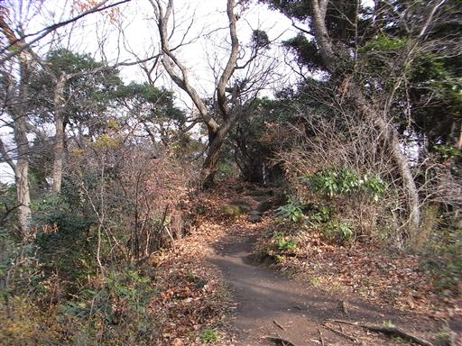
あちらこちらに岩が露出している。この山はかなりの岩山だ。
山頂付近はフリークライミングの練習場になっている。
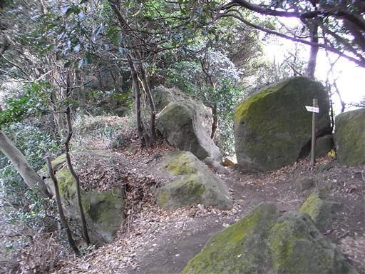
山頂の一角に出てくる。クライミングをやっている人が見える。
この辺りは凝灰岩で出来ていて、昔は石切場だった。
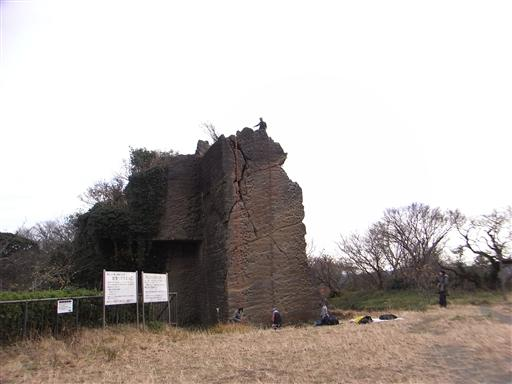
11:06 鷹取山山頂到着。標高139m。
山頂にはパラボラアンテナが建っていて、展望台になっている。
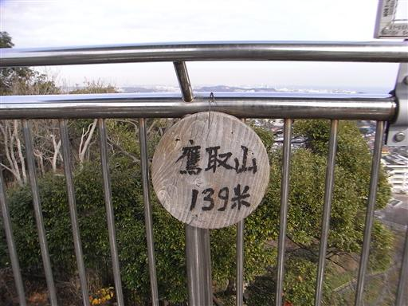
東の方には東京湾と長浦港、海の向こう側には微かに房総半島が見える。
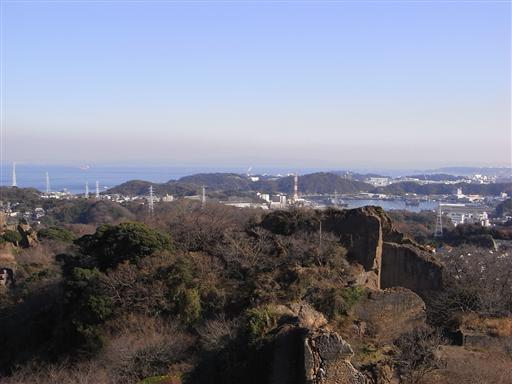
南の方に目を転じると、丘陵地帯が続いている。
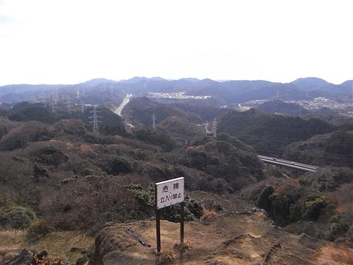
西の方には微かに富士山が見えている。電線が少し邪魔だ。
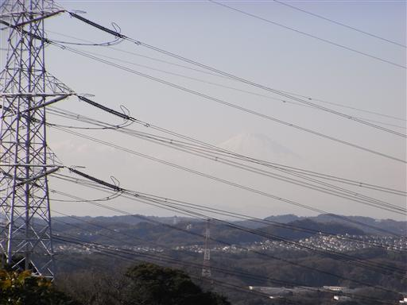
山頂付近は公園が整備されていて、トイレなどもある。
観光客はほとんどおらず、いるのはほとんどがクライマーだ。
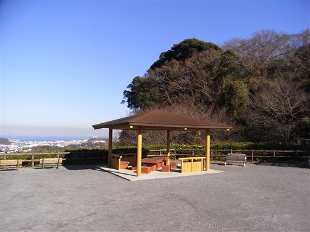
下山途中にある魔崖仏。非常に大きい。
昭和40年ごろに彫られたようで、結構新しい。
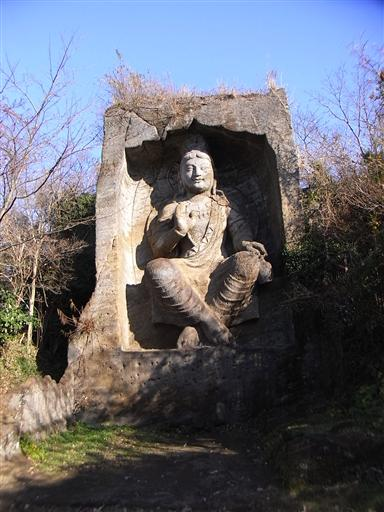
下山路上でもクライミングを楽しむ人々が沢山見られる。
凝灰岩は柔らかく危険なので、トップロープクライミングのみOKのようだ。
追浜駅に下山。標高10m。
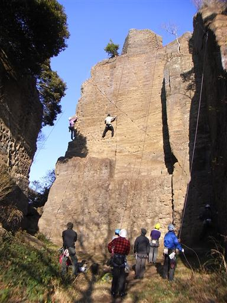